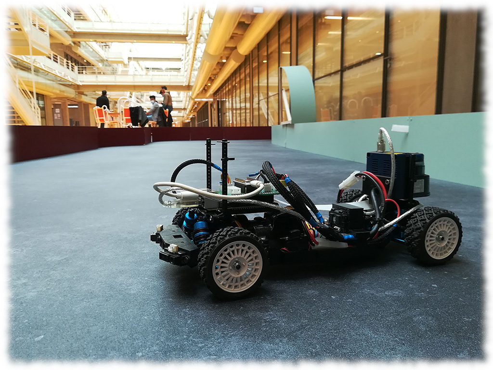

Autonomous Car Race Paris-Saclay
The event has welcomed student teams (IUT, engineering schools, universities) since 2020 for a race of 1/10 scale autonomous cars, in a friendly and collaborative spirit. The prospect of final victory does not prevent teams from helping each other throughout the year with the aim of mutual progress. Feel free to join the competition.

Date of the 2024 Edition
The 2024 edition will take place on Saturday, March 30, at ENS Paris Saclay.
Previous Editions
Summaries and videos of previous editions are available on the Culture Sciences of Engineering website: * 2023 Edition * 2021 2022 Editions

Git
The GitHub repository provides access to the rules, some photos and videos, as well as all the resources needed to participate in the Autonomous Car Race Paris-Saclay and to share your own.